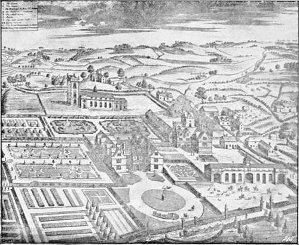
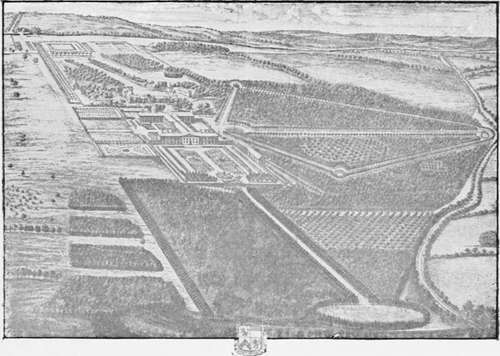
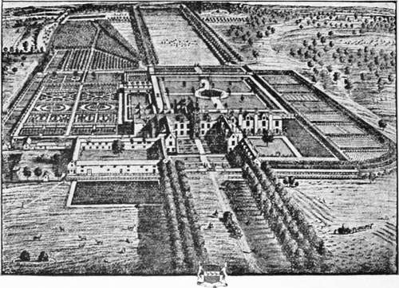
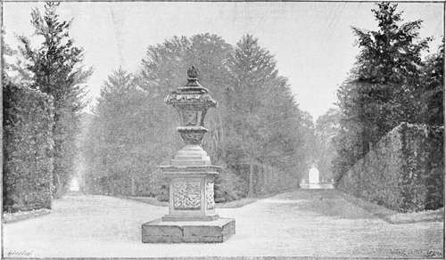

Chapter XI. Dawn Of Landscape Gardening
Description
This section is from the book "A History Of Gardening In England", by Alicia Amherst. Also available from Amazon: A History Of Gardening In England.
Chapter XI. Dawn Of Landscape Gardening
" Shade above shade, a woody theatre Of stateliest view....".
Milton, Paradise Lost.
" Shower every beauty, every fragrance shower, Herbs, flowers and fruits ; ..".
Thomson, Seasons.
THE gardeners who followed London and Wise as designers, as well as cultivators and planters, were Stephen Switzer, and after him Bridgeman. These men were busy at a time when formal gardening was on the wane. It was in Queen Anne's time that Addison and Pope first ridiculed the old style, and sought to bring in the fashion of " copying Nature." But the reaction and destruction of old gardens did not take place till later; when the theories they advanced had had time to spread. There is no lack of views and designs of gardens during this per10d. They are to be found in County Histories such as Plot's Staffordshire, Atkyns' Gloucester, and Dugdale's Warwickshire; also Beeverell, " Les Delices de la Grande Bretagne et de l'lrlande," published at Leyden in 1707, in Britannia Illustrata, 1709, with a large series of views by Kip, and in other similar works. If the authors had foreseen the annihilation that was to befall so many gardens, they could hardly have more carefully preserved their designs. But these pictures are mostly taken from some imaginary point, and give a bird's-eye view of house, garden, and surrounding landscape, in a conventional plan, regardless of perspective. Faithful representations though they may be in many cases, the formal garden, as they show it, has lost all its poetry; the pale tints of the tender shoots of the beech hedge in spring, the soft green of the sheltering yews in winter, the secluded alley, or the woodbine-covered arbour, have no charm when set down in these stiff lines of black and white. The garden at Ingestre was described by a traveller, John Loveday, of Caversham, in 1732 : The house, he says, is situated on the side of a hill, " the Gardens higher, They are large—laid out into the grandest walks between the stateliest Trees imaginable, Hares in abundance about the woody Garden, a Building erecting in the higher part for a Prospect .... which together with the Church is represented in Plot p. 299." The picture Loveday refers to is here reproduced and illustrates in a striking manner how inadequate these designs are to convey any idea of the beauties of the originals.
Ingestre, the seat of lord viscount chetwynd, from plot's "staffordshire." first edition, l686.
It has been said that it was the decadence of art in the formal style which brought about its own fall, but it is difficult to imagine anything more charming than some of the gardens of the time of Queen Anne. Their chief characteristic was the prevalence of long walks between cut trees, not exactly hedges, but trees clipped up to a certain height, and allowed to feather naturally at the top. A most curious example of this is to be seen at Down, in Essex. The trees are cut to the height of sixty or seventy feet ; the path between them is about fifteen feet wide, and seven hundred and eighty long,, and closes with a view of Hatfield Broad Oak at the end. This garden was made when the place belonged conjointly to Prior, the poet, and Harley, Lord Oxford.† Prior wrote a humorous poem on the occasion of his first visit to " Deny down down, hey derry down," as he called it. He expected to find there, gardens so stately, and arbours so thick, A portal of stone, and a fabric of brick".
Cashiobury, the seat of the rt. honble. the earle of essex in hartfordshire." from an engraving by kip.
* See p. 184.
† Now the propery of Lord Rookwood.
But on reaching his destination, the poet exclaimed to his friend, " O Morley, O Morley ! if that be a hall, The fame with the building will suddenly fall".
"BROME HALL, SUFFOLK, ONE OF THE SEATS OF THE RIGHT HON. CHARLES LORD CORNWALLIS." FROM AN ENGRAVING BY KIP.
To which he received the answer, " I show'd you Down-Hall ; did you look for Versailles ? "
Prior lived here for many years, and designed new gardens, and these alterations which Lord Oxford carried out, included the present principal garden, with box hedges in the Dutch style, and the long wall of clipped hornbeams. Another charming example is at Bramham, in Yorkshire.* The ground-plan of the garden is like any figured in Switzer's books. The house was burnt many years ago, and never restored, but the gardens have been kept up in their original state, as they were laid out by Mr. Benson. He was Ambassador to Spain, and Queen Anne gave him a grant of land on Bramham Moor ; after he had built a house and made gardens round it, she paid him a visit there, and created him Lord Bingley. Along the house is a terrace, and in front of it a grass parterre. From thence are seen vistas through the beech and hornbeam woods beyond. From the northern end of the terrace, a straight walk between high cut hedges runs westward, and leads at once into the most entrancing maze of long walks diverging from each other at regular angles. At the end of some there is a small summer-house, a seat, or statue, or monument. From the ends of the walks furthest from the centre the view ranges over the open country beyond. The garden stands above the level of the park, therefore the terrace-wall which divides them has all the effect of a sunk fence. But the most delightful part, perhaps, is where the avenues are wider, where the walks skirt the edge of a canal, and the tall trees are reflected in its silent waters. There is an open space laid out as a " French garden." In this case it is an oval slope of grass, with large flower-beds in a regular pattern ; a summer-house overlooks this garden, and to the back of the summer-house there is a large bowling-green, surrounded by trees, among which are the walks. At the opposite end of the oval garden there is a basin and " cascade," and a short distance from this point the path rejoins, at its southern end, the terrace which runs in front of the house. The effect of this garden at Bramham, on a fine autumn day, with the slanting beams of the evening sun, seen through the long vistas shining on the golden-brown foliage of the trees, is truly beautiful, and leaves an impression never to be forgotten.
* Belonging to Mr. Lane Fox.
BRAMHAM.
Continue to:
- prev: Gardening Under William And Mary. Part 6
- Table of Contents
- next: Dawn Of Landscape Gardening. Part 2